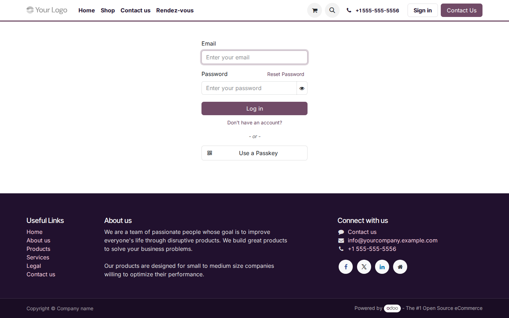
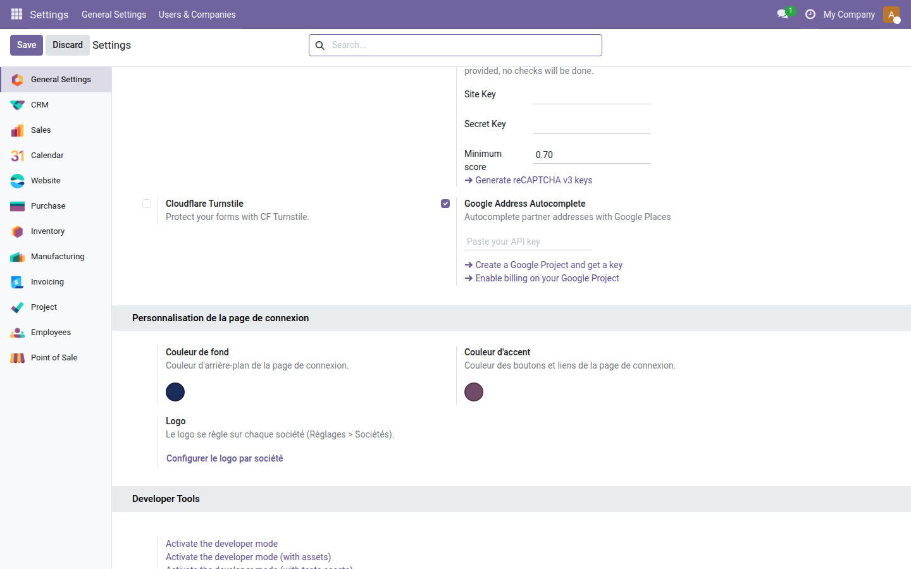

Personnalisation Login
Donnez à votre page de connexion Odoo l'apparence de votre marque — sans toucher au code.
Par défaut, la page de connexion Odoo affiche les couleurs et le logo standard du framework.
Pour vos utilisateurs et vos clients, c'est la toute première image qu'ils voient de votre solution —
et elle ne reflète pas du tout votre identité visuelle.
Modifier ce rendu nécessite normalement de surcharger des templates QWeb ou d'intervenir dans le code source,
ce qui est hors de portée d'un administrateur fonctionnel.
Ce que ça apporte
-
🎨 Couleur de fond personnalisée — choisissez n'importe quelle couleur depuis un sélecteur visuel dans Réglages ; la page de connexion s'adapte immédiatement.
-
✅ Couleur d'accent sur les boutons et liens — le bouton « Se connecter » et les liens reprennent automatiquement votre couleur de marque, sans CSS manuel.
-
🏢 Logo propre à chaque société — importez un logo dédié à la page de connexion (indépendant du logo utilisé dans les documents), configurable société par société.
Aperçus réels
1. Page de connexion brandée
Le bouton « Log in » et les liens reprennent exactement votre couleur d'accent — ici #714B67 — sans aucune modification de code.

2. Configuration dans Réglages
Le bloc « Personnalisation de la page de connexion » dans Réglages > Paramètres généraux : sélecteur de couleur de fond (bleu marine), sélecteur de couleur d'accent (violet) et lien vers la configuration du logo par société.

Pourquoi l'adopter
-
Zéro code requis : tout se configure depuis Réglages > Personnalisation de la page de connexion, accessible à tout administrateur Odoo.
-
Première impression soignée : vos utilisateurs et vos clients voient votre marque dès l'écran de connexion, ce qui renforce la confiance et le sentiment d'appartenance.
-
Multi-société : chaque société peut disposer de son propre logo de connexion, utile pour les groupes ou les revendeurs gérant plusieurs entités.
-
Gratuit et open source (LGPL-3) : aucun abonnement, aucun coût, modifiable librement.
Licence LGPL-3 — compatible Odoo 19.0. Support : apps@odooskills.com.